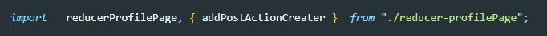

Для тестирования reducer мы создаем файл который назван точно так же как и наш reducer только в конце делаем приставку .test.js. Например у нас есть reducer который называется reducer-profilePage.js соответственно файл тестировки мы называем reducer-profilePage.test.js
Далее импортируем в него функцию reducer и заодно функцию action creator того события которое будем тестить. В нашем примере мы будем тестировать добавление постов.
Reducer это функцию которая принимает state и action и в зависимости от того что придет в action reducer должен вернуть измененный state. Dj время теста мы должны передать в reducer state и action
Создаем state и action
для тестирования используется функция it которая принимает два параметра: 1 - это строка с названием теста, содержимое строки произвольное, важно то что нельзя указывать несколько тестов с одним и тем же описанием в первом аргументе. 2 - второй аргумент это callback функция которая будет вызывать наш reducer
Внутри callback мы должны вызвать метод expect который принимает в качестве аргумента то что мы будем проверять. Например мы проверяем будет ли добавлен в state новый пост, если да то длина массива будет увеличена на 1, значит внутрь expect мы должны передать ссылку на длину массива в state который нам вернул reducer
Тут же после вызова expect цепочкой вызываем метод toBe - этот метод получает ожидаемый результат. React сравнит полученный результат с ожидаемым и если все верно то вернется success
Пример проверки на корректность значения поста: